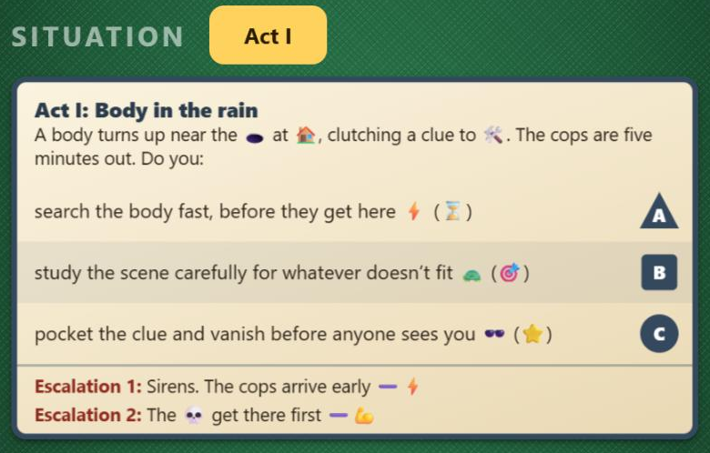
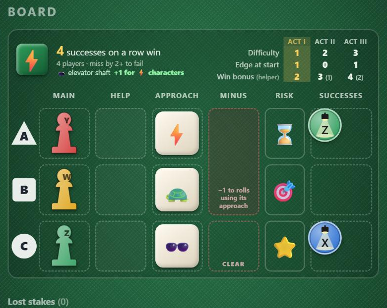
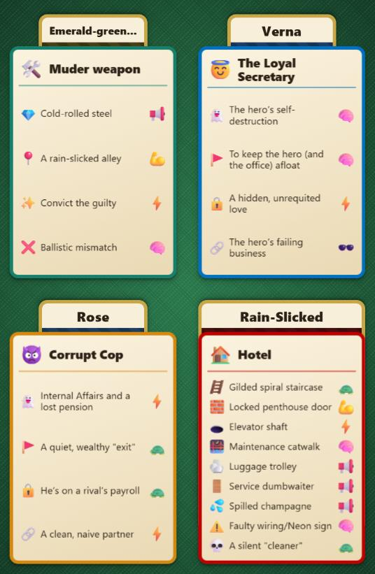
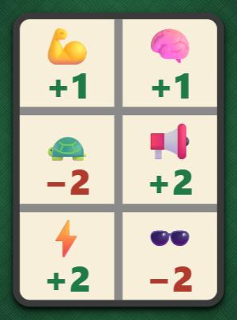
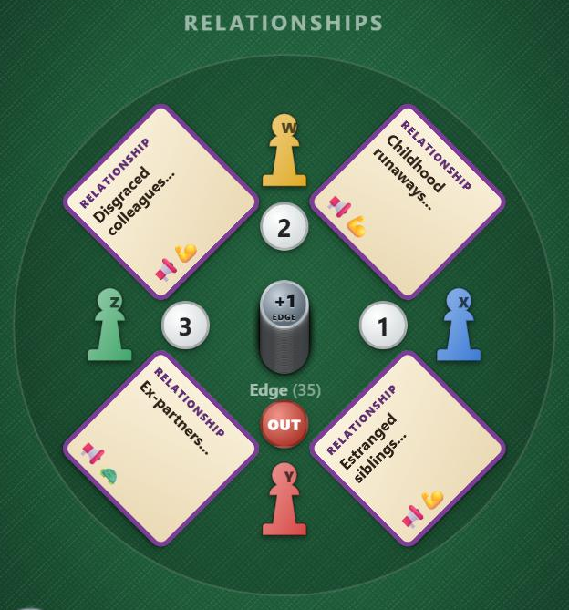
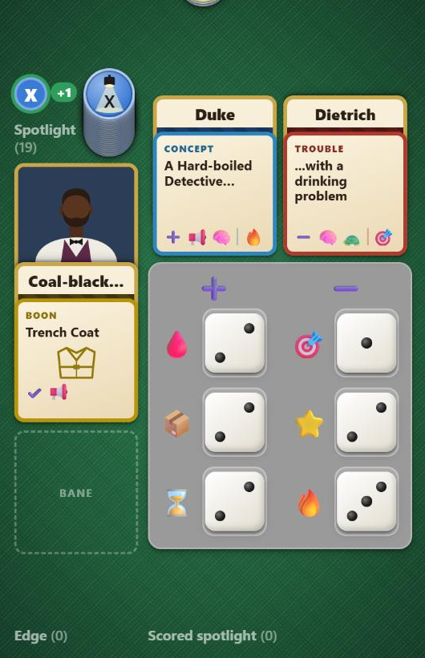
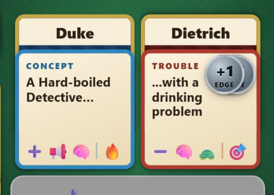
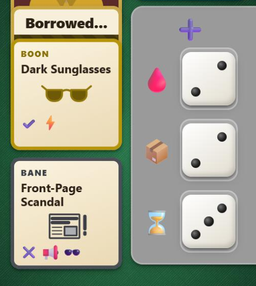
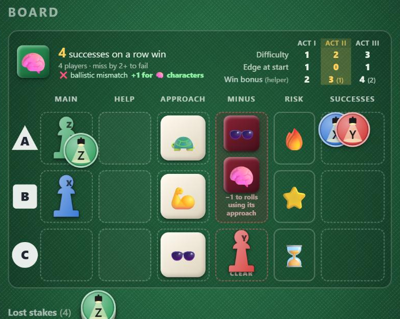
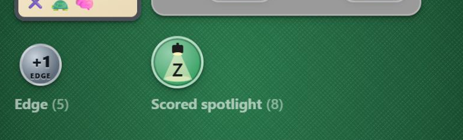

1The idea
You and your friends are the cast of a story told in three acts. Every act is a Situation: a body in the rain, a bridge chase, a showdown at the docks. Each round you bet your pawns on how your character will handle it, one card of Fate decides how it goes, and the best moments earn you spotlight.
It plays like two games at once:
- Roulette. Everyone bets on a row (A, B or C), then a single Fate card is turned and every row reads its own number from it. Bold bets, cautious bets, helping a friend or stepping back to steady the scene are all on the table.
- Mad Libs. Situations are story templates with blanks like 🏠, 👿 or 😇. The Element cards on the table fill them in: “A body turns up near the elevator shaft at the Rain-Slicked Hotel, clutching a clue to the emerald-green murder weapon.” Every game tells a different story.
You work together to get through each Situation, because a lost situation scores nothing. But only one of you can be the star of the story: the player with the most spotlight at the end.
2What’s on the table
The Situation card

The story of the act. Its description sets the scene, then offers three choices. Each choice ends with its approach and, in brackets, the resource at risk: “search the body fast, before they get here ⚡ (⌛)” is a quick action that risks your time.
Each choice is marked with its row’s shape: ▲ A · ■ B · ● C. The same shapes are on the Board, so you can always tell which choice a row is.
At the bottom are two Escalations: what goes wrong when someone fails.
The Board

The Board is where you bet. Each row (▲A, ■B, ●C) has:
| Column | What goes there |
|---|---|
| Main | The pawn of the player taking the lead on that choice. One per row. |
| Help | Pawns of players backing them up. |
| Approach | The row’s approach: which Fate number the row reads. |
| Minus | The Minus box for Escalation dice (rows A–B), and the Clear box under it (row C). |
| Risk | The resource lost on a failure. |
| Successes | Spotlight tokens earned on that row. Enough of them wins the situation. |
The banner across the top shows how many successes win (one per player), the Scene die (the green die on the left, see 5), and a small table of the numbers for your player count: difficulty, Edge at the start of each act and the act-win bonus. The current act is highlighted.
The Elements

Four cards fill the blanks in every Situation:
- 🛠️ MacGuffin: the thing everybody wants.
- 😇 Ally: someone on your side, more or less.
- 👿 Villain: the one behind it all.
- 🏠 Location: where it happens. A new Location is drawn at the start of every act.
Each card has lines, each with an icon and an approach. A Situation can name a line directly: 👿🔒 is the Villain’s secret, 🌉 is the Location’s crossing. When you read a Situation aloud, fill each symbol in from these cards.
Fate

The Fate deck is the game’s dice. Each card gives a number from −2 to +2 to every approach. Only one card is turned per round, and every row reads the number for its own approach.
The deck sits right of the Board, with its discard pile underneath. When it runs out, shuffle the discards back in.
The Relationship wheel and Edge

Your pawn starts each round on the wheel. Between every two neighbours lies a Relationship card (“Childhood runaways…”) showing two approaches. You may help on a row whose approach is on one of the Relationship cards next to you. With two players, there’s a single Relationship card in the middle.
Each player has a numbered initiative token: the order you bet in. Its back says OUT, for a player losing their turn (see 8).
In the centre is the shared Edge pile. Each Edge token is a +1 you can spend on a roll after seeing the Fate card. Its label shows how many are left.
3Your character

Your character is built from cards, and their names come from the name cards tucked above:
- ➕ Concept (“A Hard-boiled Detective”): what you are. +1 to any roll using one of its two approaches. Its resource starts 1 higher.
- ➖ Trouble (“…with a drinking problem”): what gets you in trouble. It never costs you anything unless it’s invoked or compelled (see 9). Its resource starts 1 lower.
- ✔️ Boon (“Trench Coat”): an item or edge. +1 to rolls using its approach. You can trade up to a better one, or burn it to get out of trouble (see 8 and 9).
- ✖️ Bane: an empty slot until something goes wrong (see 9).
- Portrait: a Relationship card turned face-down.
The grey sheet holds your six resources, each a die showing its value: 🩸 health, 📦 gear, ⌛ time, 🎯 focus, ⭐ reputation and 🔥 motivation. Each starts at 2.
Above your portrait is your stack of spotlight tokens. Below your sheet are your banked Edge and your Scored spotlight.
The six approaches
| 💪 | Forceful | 🧠 | Clever | 🐢 | Careful |
|---|---|---|---|---|---|
| 📢 | Flashy | ⚡ | Quick | 🕶️ | Sneaky |
4Setting up
- Choose a theme: Film Noir or Space Opera. Each has its own cards; the Fate deck, approaches and resources are shared.
- Deal each player a Concept, a Trouble and a Boon, with name cards tucked above them, and a face-down Relationship card as a portrait. Set each resource die to 2, then +1 for the resource on your Concept and −1 for the one on your Trouble.
- Give each player 20 spotlight tokens in their colour, a pawn and an initiative token. Shuffle the initiative numbers.
- Lay out the Relationship cards between neighbours on the wheel, and the Edge pile in its centre.
- Deal the four Elements: MacGuffin, Ally, Villain and Location.
- Shuffle the Fate deck. Keep the Bane deck shuffled nearby; it isn’t on the table until someone needs it.
Numbers for your player count
| 2 players | 3 players | 4 players | |
|---|---|---|---|
| Successes on one row to win | 2 | 3 | 4 |
| Difficulty, Act I / II / III | 1 / 2 / 4 | 1 / 2 / 3 | 1 / 2 / 3 |
| Edge for everyone as each act begins | 0 / 0 / 2 | 2 / 1 / 1 | 1 / 0 / 1 |
| Act-win bonus: winner (and each other player on the row) | 2 · 3 (1) · 4 (2) | 2 · 2 (1) · 4 (2) | 2 · 3 (1) · 4 (2) |
The Board’s banner shows the same numbers, so you rarely need this table.
5Playing an act
The game has three acts, each harder than the last. At the start of each act:
- Draw a Situation for this act and read it aloud, filling in the symbols from the Element cards.
- Draw a new Location (from Act II on). The story moves somewhere new.
- Set the Scene die. Every Situation is built around one Element line named in its description, like “the elevator shaft” or “the Villain’s secret”. Set the green Scene die to that line’s approach. For the whole act, any character whose Concept or Boon shows that approach gets +1 on any row they bet on as Main. Mark their badge.
- Take Edge: everyone takes the act’s Edge from the pile.
Then play rounds until someone fills a row with successes (the situation is won) or the situation is lost.
6A round, step by step
- Bets. In initiative order, each player puts their pawn in one place:
- Main on a free row: you’ll make that roll.
- Help on a row that already has a Main, if one of your neighbouring Relationship cards shows that row’s approach. You add +1, you can spend your Edge on the roll, and you share both the reward and the risk.
- Clear: put your pawn in the Clear box to remove a Minus die at the end of the round (see 10).
- Pass, or patch yourself up instead: give up your bet to put your Bane back in the deck.
- Troubles and Banes. Before the Fate card, Main players may invoke their Trouble or Bane, and other players may compel them (see 9).
- Turn the Fate card. One card for everyone.
- Resolve each row that has a Main, A then B then C: add up the effort, spend Edge if you want, and compare with the difficulty (see 7 and 8). When a row is done, its pawns go back to the wheel, so the pawns still on the Board show who hasn’t gone yet.
- Clear. If someone is in the Clear box, they remove one Minus die now, take 1 Edge and go back to the wheel.
- Check the situation: is a row full (won), or has it been lost?
- End of the round. Minus dice that went in this round start counting now. Then set the new initiative: whoever placed the fewest spotlight tokens this round bets first next round. Break ties in favour of whoever has less spotlight overall, then whoever went earlier.
7Rolling: effort and the Fate card
A row’s effort is the sum of:
| ➕ Concept shows the row’s approach | +1 |
| ✔️ Boon shows the row’s approach | +1 |
| The Scene die favours the Main player | +1 |
| Each helper | +1 each |
| Each Minus die showing the row’s approach (not counting dice that went in this round) | −1 each |
| Trouble or Bane, if invoked or compelled | −1 each |
| The Fate card’s number for the row’s approach | −2 to +2 |
| Edge, spent after seeing the Fate card | +1 each, at most 2 per roll |
Then compare the effort with the act’s difficulty. The Main player pays for Edge first, and helpers can chip in their own, as long as the roll gets no more than 2 Edge in total.
8Success, close call, failure
Success: beat the difficulty
Beat the difficulty by N and the Main player places N spotlight tokens on the row’s Successes. Each helper adds 1. Tokens on the board only score if the situation is won.
Overflow: a row only takes the tokens it still needs to win. Every point of margin it can’t use becomes 1 Edge from the pile instead, for the Main player. A helper whose token wouldn’t fit takes 1 Edge too.
Boon upgrade: beat the difficulty by 2 or more as Main and draw a Boon from the ones nobody holds. Keep it or your old one (one Boon at a time), and put the other back. If your Boon slot is empty, just take it.
Close call: miss by 1, or a tie
Nothing happens: no progress and nothing lost (except a stake).
Failure: miss by 2 or more
- The Main player and each helper lose 1 of the row’s Risk resource.
- Helpers take 1 Edge. The Main player takes 1 Edge plus 1 for each Minus die already out: up to 3 when things are at their worst. That’s desperation.
- The Main player draws a Bane (see 9), unless they burn their Boon.
- The next Escalation happens: read it from the Situation card and put its Minus die in the Minus box. It only starts counting next round (see 10).
Out of a resource
A resource that drops to 0 costs you your next turn. Flip your initiative token to OUT. At the end of the round you sit out, flip it back; on your next turn the resource comes back at 1.
9Troubles and Banes
Your Trouble never hurts on its own: someone has to bring it into play, either you (invoking) or another player (compelling). After the bets and before the Fate card, if your row as Main shows one of your Trouble’s approaches:
| What happens | Edge paid by | |
|---|---|---|
| You invoke it | −1 on your roll, +1 Edge | the pile |
| Someone compels it, you accept | −1 on your roll, +1 Edge | the compeller |
| Someone compels it, you refuse | no −1; you pay 1 Edge to the pile, and so does the compeller | you both |
| The Scene die shows one of your Trouble’s approaches | +1 more Edge | the pile |

The Edge goes onto the Trouble card, not your pile, and becomes yours once the roll is over. You can’t use it to cancel its own −1.
Each card counts once per roll. Why invoke? A −1 you can afford now buys Edge for the roll that really matters. Why compel? To stop a rival who’s about to finish the situation, or to drain their Edge if they refuse.
Banes

A Bane is something bad that happens to you: a Broken Leg, Out of Ammo, Shaky Hands. When you fail as Main, draw one at random and tell the table how it happened.
- It shows two approaches and works like a Trouble: invoke it for −1 and Edge.
- But anyone can compel it for free: the Edge comes from the pile. You can still refuse by paying 1 Edge to the pile.
- You hold one Bane at a time. If you draw another, keep whichever you prefer.
- It stays from act to act until you get rid of it: give up your bet for a round, spend 2 Edge on your turn, or burn your Boon the next time you fail (see 8).
10Minus dice and the Clear box

Every failure triggers the next Escalation on the Situation card. Its Minus die goes in the Minus box: −1 to every roll using that approach, on any row.
A new die only starts counting from the next round. Leave it a little to the side (on the table it’s shown dimmed) until the round ends. That way every row in a round rolls against the same Minus box, the one everyone saw when they bet, and row A’s failure can’t drag down rows B and C in the same round.
The box holds two dice. With both out, the next failure loses the situation: every spotlight token on the board goes back to its owner, unscored. A new die already counts toward that limit, even before it starts counting on rolls.
Holding the line
- One player may put their pawn in the Clear box instead of betting.
- At the end of the round, after every row has rolled, they remove one Minus die and take 1 Edge. This round’s rolls still feel the dice.
- While they sit there, one failure can’t lose the situation: its die goes in anyway, and the clearer takes one out at the end of the round.
11Winning a situation
When one row reaches its target (2, 3 or 4 tokens for 2, 3 or 4 players), the situation is won:
- Every spotlight token on the board scores, on every row: move them to their owners’ Scored spotlight.
- Act-win bonus for the winning row (see the Board’s banner): one player banks the big bonus, and everyone else on the row banks the helper share.
- Stamp the Situation with a ★ for the Main player who finished it. Then start the next act.
12The end of the game
After Act III, cash in your leftover Edge: every 2 Edge buy 1 spotlight for your Scored row. An odd Edge left over is worth nothing.
Then whoever has the most Scored spotlight is the star of the story. Spotlight still sitting in your stack or lost as stakes doesn’t count.
Tiebreaker: whoever won Act III.
Then flip back through the acts on the Situation card (the Act buttons beside its title) and re-tell the story you made.

13A round in play
From a four-player Film Noir game, Act II, difficulty 2. Frank (W), Duke (X), Sam (Y) and Mickey (Z) are trying to work out whether Verna, the Loyal Secretary, is lying to them.
Duke takes row ▲A, 🐢: “believe Verna and plan the next move together”. Sam helps him: one of Sam’s Relationship cards shows 🐢. Frank takes ■B, 💪: “shake Verna down”. Mickey takes ●C, 🕶️: “let Verna go and follow her”, and stakes 1 scored spotlight.
The Scene die shows 🧠 (the MacGuffin’s flaw, a ballistic mismatch). Duke’s Concept shows 🧠, so he gets +1 on any row.
Duke’s Trouble, “…with a drinking problem”, shows 🐢, his row’s approach. He invokes it: −1 on his roll. And since his Trouble also shows 🧠, the Scene die’s approach, 2 Edge go on the card instead of 1.
💪 −2 · 🧠 +1 · 🐢 +1 · 📢 −2 · ⚡ −1 · 🕶️ −1
▲A (Duke, 🐢):
Scene +1 · Help +1 · Trouble −1 · Fate 🐢 +1 = 2 → ties the difficulty. Sam spends 1 banked Edge: 3, beats it by 1.
Duke places 1 token and Sam adds 1: row A is at 2/4. Now the roll is over, so the 2 Edge waiting on Duke’s Trouble card go into his bank.
■B (Frank, 💪):
Concept +1 · Fate 💪 −2 = −1, misses by 3: a failure.
Frank loses 1 ⭐. That was his last one, so he flips his initiative token to OUT and sits out next round. He takes 1 Edge and draws a Bane: Front-Page Scandal. (He could have burned his Boon, the Dark Sunglasses, to avoid the Bane, but he keeps them.) The first Escalation hits (“Verna slips away into the night”), and a 🕶️ Minus die goes in the box, set aside until the round ends.
●C (Mickey, 🕶️):
Boon +1 · Scene +1 · Fate 🕶️ −1 = 1, misses by 1: a close call.
Frank’s new 🕶️ die doesn’t count yet, so it can’t drag Mickey down. He makes no progress and loses his stake, but nothing else happens.
The 🕶️ Minus die now counts: −1 to anyone rolling 🕶️. Frank sits out, his token showing OUT. With one Minus die out, one more failure brings the second, and then the situation is one failure from being lost. That’s the moment for someone to give up their bet and sit in the Clear box.
14Quick reference
Each act
- New Situation (and a new Location from Act II on). Read it aloud.
- Set the Scene die. Mark the characters it favours.
- Everyone takes the act’s Edge.
Each round
- Bet in initiative order: Main · Help (needs a Relationship showing the row’s approach) · Clear · Pass / patch up. Main may stake up to 2 scored spotlight.
- Invoke or compel Troubles and Banes: −1, +Edge (it waits on the card).
- Turn one Fate card.
- Resolve rows A → B → C. Edge after the reveal, at most 2 per roll. When a row is done, its pawns go back to the wheel.
- Beat the difficulty by N: N tokens (only what the row needs, the rest as Edge); each helper +1. Beat it by 2+: draw a Boon, keep either.
- Miss by 1 or tie: nothing happens.
- Miss by 2+: lose the Risk resource; Edge (Main: 1 + Minus dice out); Main draws a Bane (or burns their Boon: no Bane, and heal the one they carry); next Escalation, whose die counts from next round.
- Clear box: remove a Minus die, +1 Edge.
- Won? A full row scores the whole board, plus the act bonus (Spotlight Shift). Lost? A failure with 2 Minus dice out (unless someone holds the line): the board’s tokens go back unscored.
- End of round: new Minus dice start counting. Initiative: fewest tokens placed this round goes first.
Remember
- A resource at 0: flip your token to OUT and lose your next turn.
- One Boon and one Bane at a time. Remove a Bane with 2 Edge, by giving up a bet, or by burning your Boon when you fail.
- After Act III, every 2 leftover Edge buy 1 spotlight. Most Scored spotlight is the star; tiebreaker: whoever won Act III.